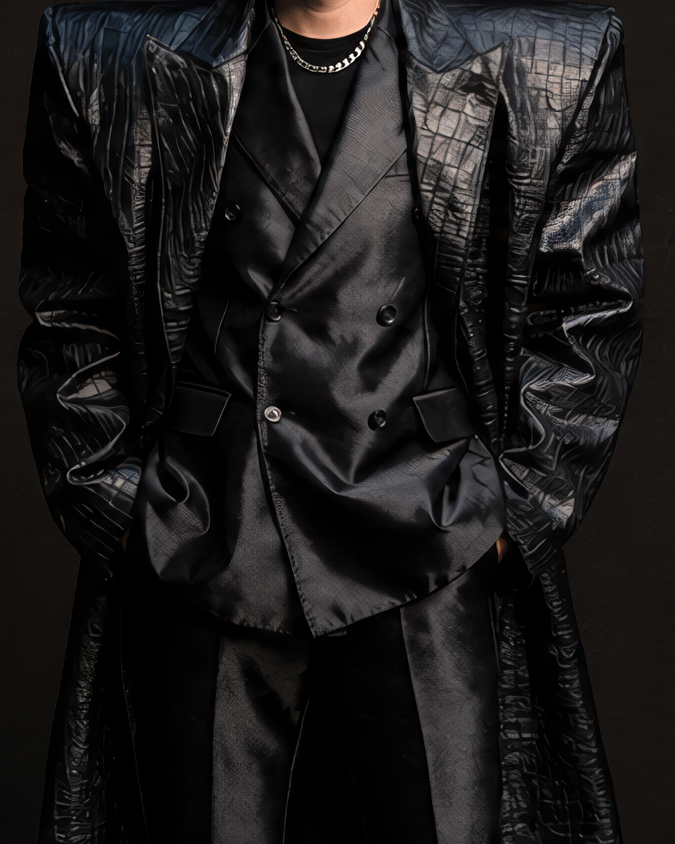
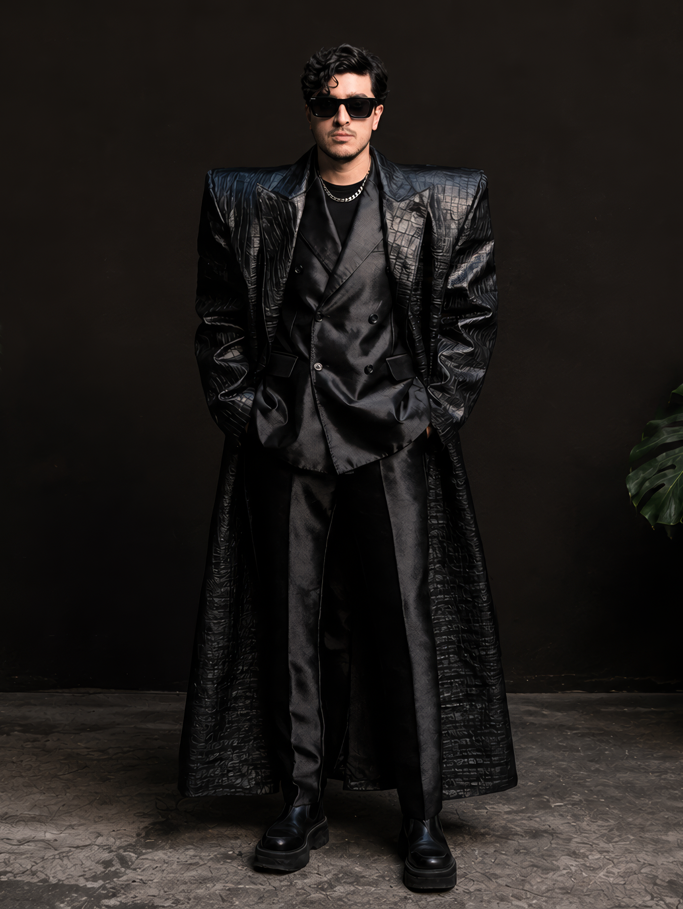

Parallel Vision Artist
Cabizbajo
Artist / Transmission from the Archive

Profile / Dancefloor Pressure
Cabizbajo
Cabizbajo is a Mexican DJ and producer whose sound moves between Indie Dance, Techno, Tech House, Dark Disco and House: direct, physical and built for the pressure of the room.
Inside Parallel Vision, he enters through the Cabizbajo remix of Tanzen Im Kreis and the Berlin 2063 archive: a body moving between club energy, urban systems and visual fiction.
His presence in the project connects the real language of the dancefloor with the label’s speculative world, where performance becomes image and rhythm becomes architecture.
Image Record / 02 Frames
Visual Archive


Artist Channels / External